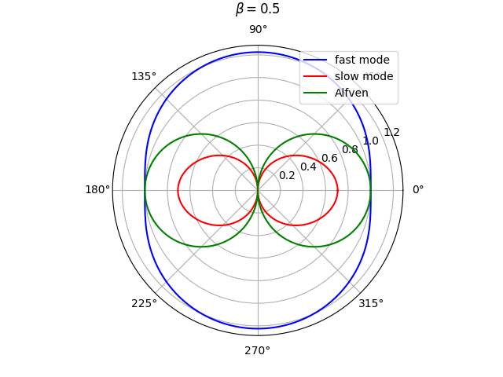
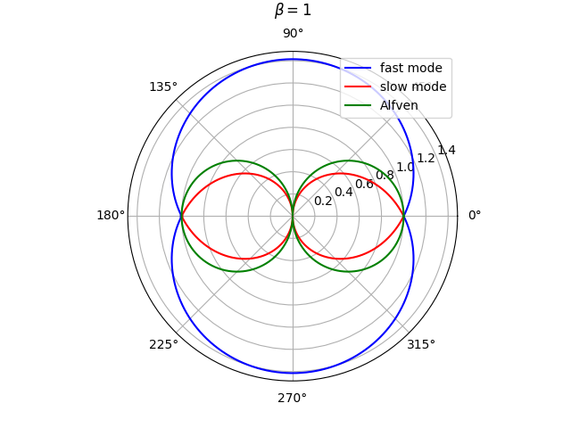
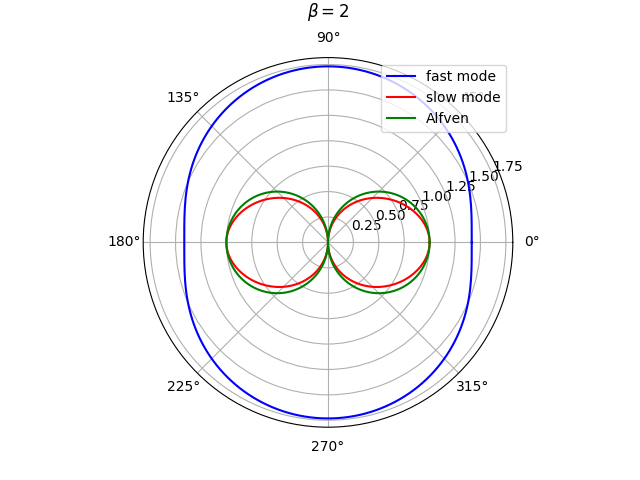
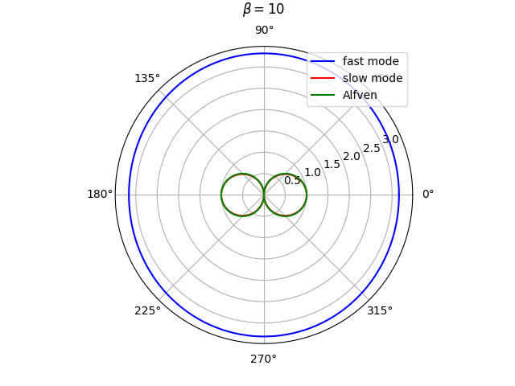

Research
MHD Waves




Magnetohydrodynamic waves are ubiquitous in magnetized plasmas, ranging from the Earth's ionosphere and magnetosphere, solar atmosphere to accretion disks!
Synchrotron Radiation
My master's thesis project was titled `Synchrotron radiation and polarised radiative transfer'.
DISCLAMER
The site is under construction. It will be updated properly (especially this page) as and when I get time, my CV however is updated, so do check that out.